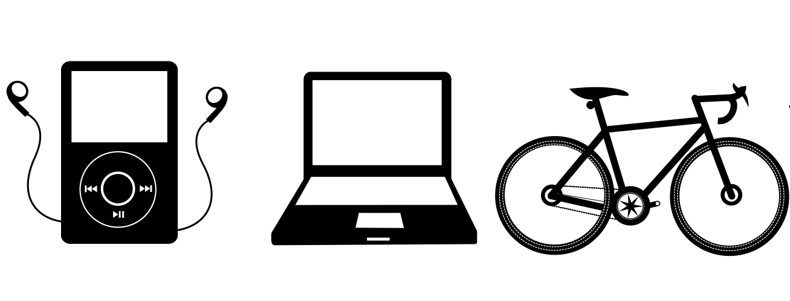

What allows me to deeply dive into intuitive understanding of complex matters is complete removal of distractions in form of sensory input, physical discomfort, interfering thoughts and emotions. This can be conveniently achieved in flow state, which can be easly initiated with means of synchronizing lightweight semi-repetitive physical activity with corresponding music. Historically it was achieved in trance dancing, martial art, yoga practice and sex, bike+music player seams most convenient nowadays.
Since i create conscious memories my main area of interest is spontaneous interaction of elements in complex system. In my childhood years it manifested mainly as observation of fire, ants, clouds and trees. Gradually i realized presence of similar patterns in human artifacts and behavior. Subsequently it appeared to me that those rules bind also elements of macrocosm and microcosm. Internet fascinated me when for first time i was able to put my hands on it, ultimately because it is most easly available and characterized by minimum latency, representation of phenomena fascinating me.